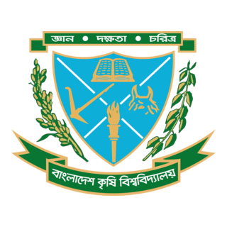

| Period/Day | 1stPeriod 8:00-8:55 | 2ndPeriod 9:00-9:55 |
3rdPeriod 10:00-10:55 | 4thPeriod 11:00-11:55 |
5thPeriod 12:00-12:55 | 6thPeriod 2:30-3:25 |
7thPeriod 3:30-4:25 | 8thperiod 4:30-5:25 | |
|---|---|---|---|---|---|---|---|---|---|
| Sunday | AS 1203 Animal Science | IWM 1203 Fluid Mechanics | CSM 1203 Vector Analysis and Differential Equation | Recess | AS 1204 Animal Science Gr-A LAN 1202 Communicative English Gr-B |
||||
| Monday | FET 1201 Energy and Mass Balance in Food Processing | CBOT 1201 Crop Physiology and Food Quality | AS 1203 Animal Science | IWM 1204 Fluid Mechanics Gr-A CBOT 1202 C :rop Physiology and Food Quality Gr-B |
|||||
| Tuesday | CSM 1205 Computer Programming and Application | CBOT 1201 Crop Physiology and Food Quality | FET 1201 Energy and Mass Balance in Food Processing | CSM 1206 Computer Programming and Application Gr-A IWM 1204 Fluid Mechanics Gr-B |
|||||
| Wednesday | IWM 1203 Fluid Mechanics | CSM 1203 Vector Analysis and Differential Equation | CBOT 1202 Crop Physiology and Food Quality GR-A As 1204 Animal Science Gr-B | ||||||
| Thursday | CSM 1203 Vector Analysis and Differential Equation | CSM 1205 Computer Programming and Application | LAN 1202 Communicative Englisg Gr-A CSM 1206 Computer Programming and Application Gr-B |
||||||